1. Learning progress
Final objective over epochs critical
Real EVRP objective J per epoch (lower is better). MA window = one full training cycle.
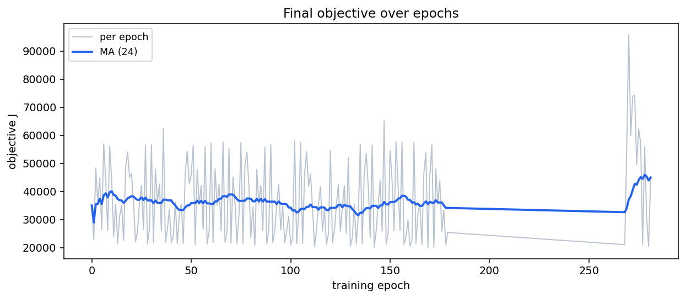

Raw objective return vs shaped training return
APPENDIX: shaped training return ≠ paper J. Prefer feas/served/J for main paper figures.
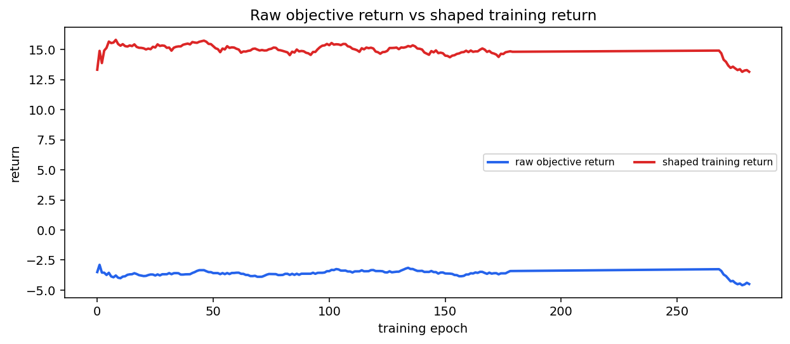

Cycle-level objective critical
Mean objective over all 24 training instances per cycle (most interpretable learning curve).
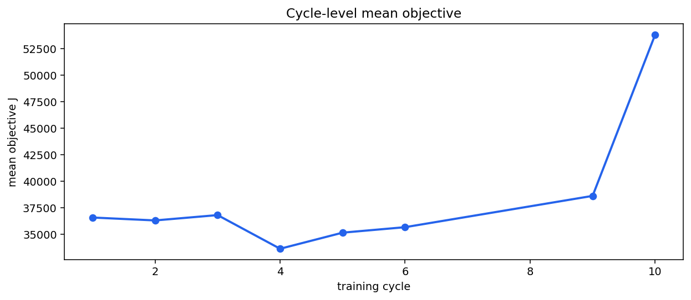

2. Customer service and feasibility


3. Paper metrics (gap / fleet / class)
Paper served & feasibility critical
Primary paper learning curve for multi-agent EVRP (not shaped reward).
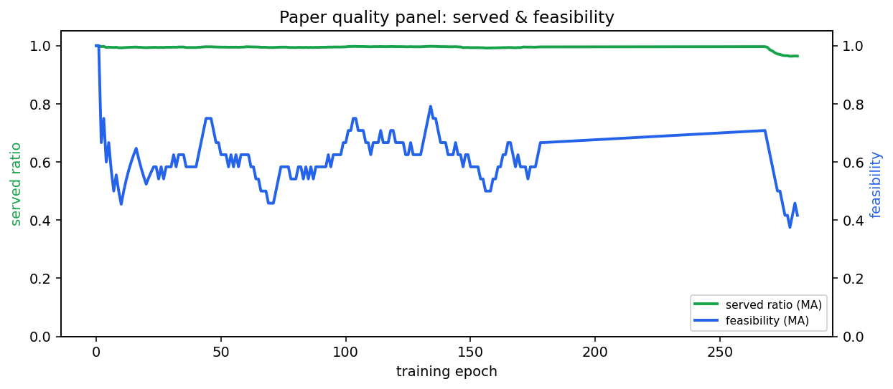

Optimality gap vs expert critical
(J − J_expert) / |J_expert|. Negative means better than expert.
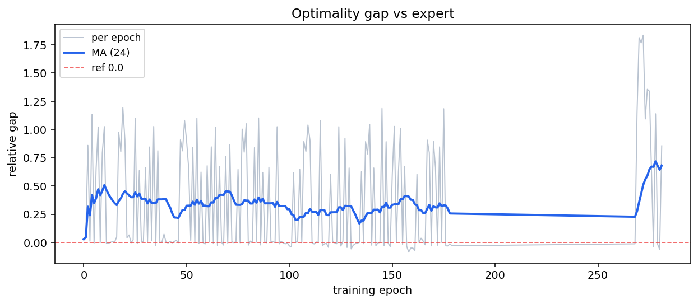

Used EVs vs expert m* critical
Deployed fleet vs lexicographic expert m* (lower used EVs better when feasible).
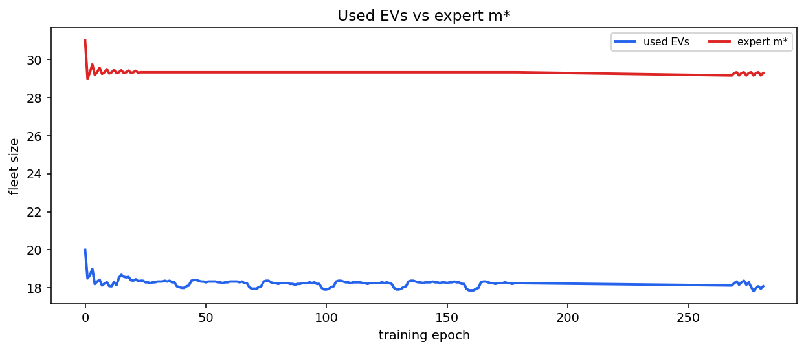

Objective by class C/R/RC critical
Per-class paper objective — detects cross-class interference.
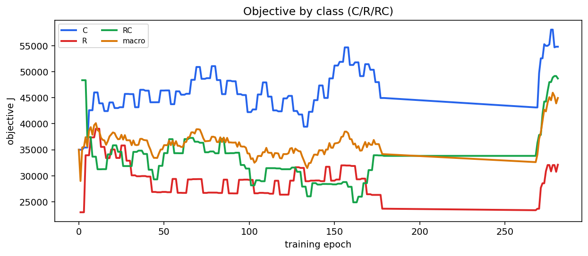


Served rate by class C/R/RC critical
Per-class served-customer ratios over training.
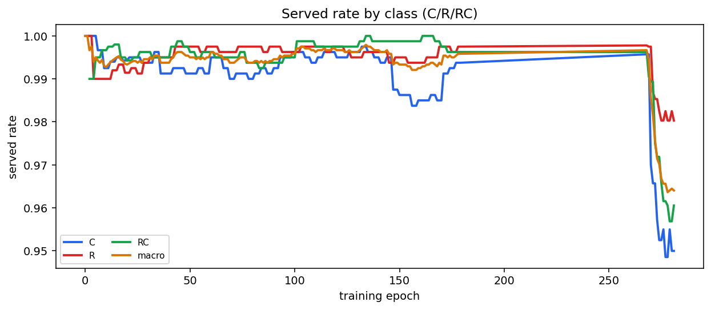

4. Reward and penalty diagnosis
Reward decomposition critical
Training reward components — check whether terminal penalties still dominate.
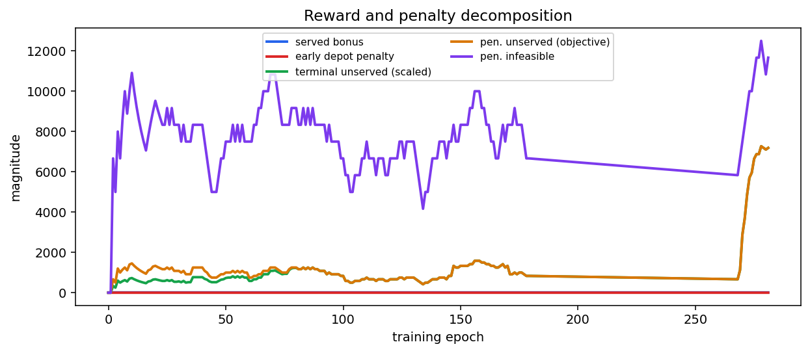


Objective mismatch critical
Relative |J - reconstructed J| / |J|. Values > 0.05 mean reward misalignment.
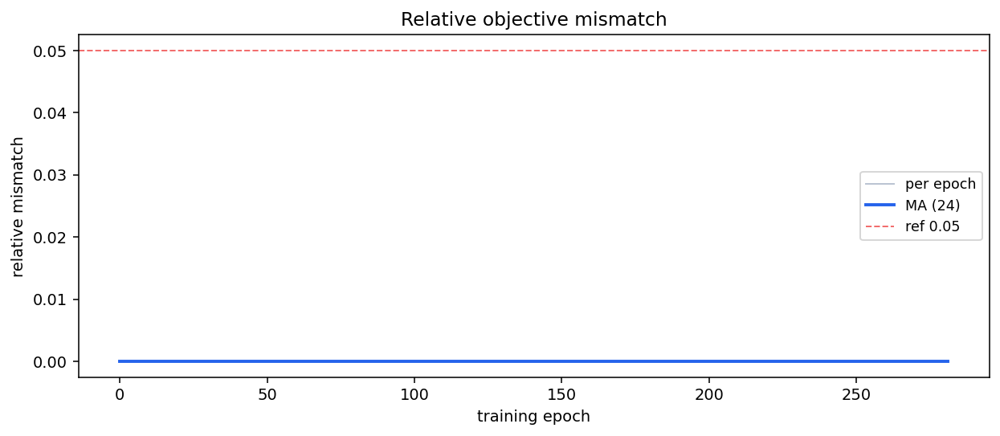

5. Action behavior


6. Critic and actor health

Critic explained variance critical
Near zero means the critic is not learning useful values.
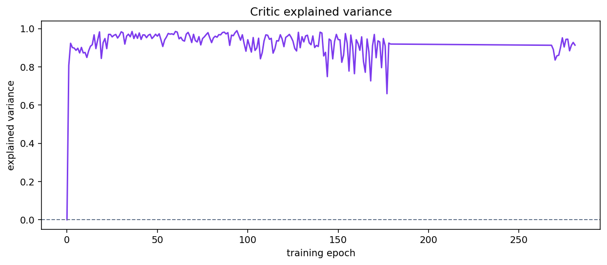


Gradient and parameter update norms critical
Confirms the actor and critic weights are actually changing each update.
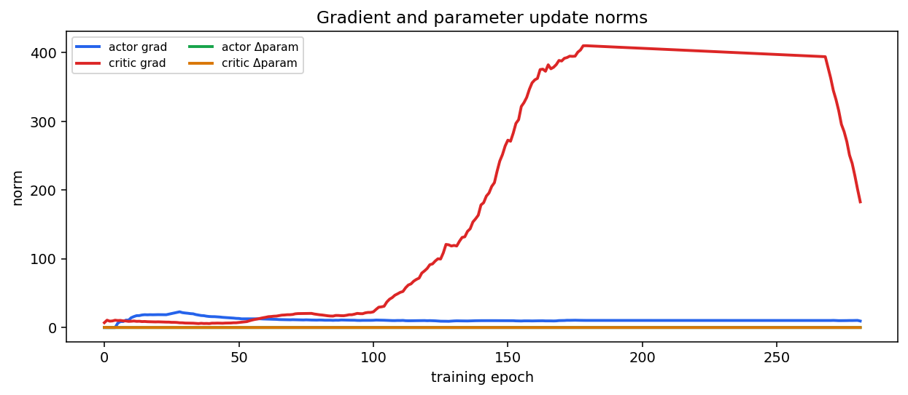

7. Per-instance learning


8. EVRP operational metrics


Index
See figures_index.md.